01
Esencia & voz
Quiénes somos y cómo comunicamos. Esta es la base que da coherencia a todo lo demás —y la materia prima para escribir buenos prompts de marca.
Impulsamos el crecimiento digital de empresas a través de una visión integrada que combina marketing, data & tecnología, transformando atención en resultados medibles.
Visión
Ser el partner líder en LATAM en crecimiento digital, integrando marketing, data y tecnología para generar resultados reales, medibles y escalables.
Misión
Potenciar el crecimiento de empresas líderes mediante soluciones integradas de marketing, data e inteligencia artificial.
Valores
- Excelencia
- Innovación
- Transparencia
- Equipo
- Agilidad
Tono de voz
Comunicamos desde el conocimiento técnico, evitando la complejidad innecesaria. Nuestra voz combina experiencia e innovación con una actitud humana que transmite confianza. Claros, precisos y orientados a resultados.
Técnico pero claro
Humano y cercano
Preciso y medible
Jerga vacía
Complejidad innecesaria
02
Logos
El logotipo es inalterable. Al reproducirlo, usá siempre los archivos provistos y respetá estas pautas. Cada versión se usa según el fondo y el contexto.
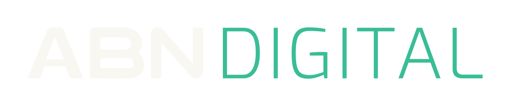
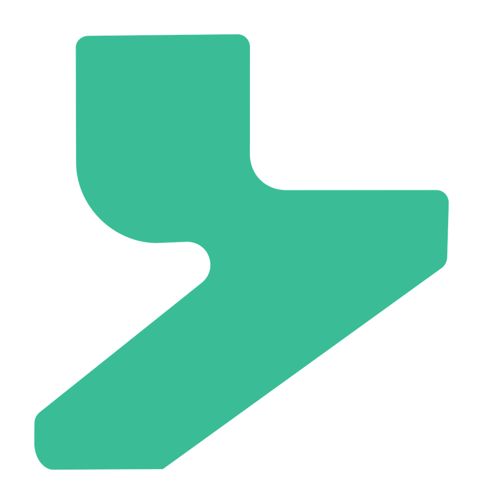
Área de seguridad
Mantené alrededor del logo un margen libre mínimo de 2 × 2 módulos (la altura del isotipo como unidad). Ningún elemento debe invadir esa zona.
2X
Tamaño mínimo
Para garantizar legibilidad, no reproduzcas el logotipo por debajo de estos mínimos, tanto en digital como en impreso.
- Isologotipo≈ 38 px / 1 cm
- Logo horizontal≈ 170 px / 4,5 cm
- Isotipo≈ 24 px de alto
Usos no permitidos
El logo no debe modificarse de ninguna manera. Su orientación, color y composición permanecen como se indica, sin excepciones.
- ✕ No distorsionar ni deformar
- ✕ No agregar sombras ni efectos
- ✕ No rotar ni cambiar el eje
- ✕ No cambiar tono, color u opacidad
- ✕ No alterar el interletrado
- ✕ No aplicar contornos al logo completo
03
Colores
Tech Green es el color protagonista de ABN Digital: energía, crecimiento y acción. Se apoya en un núcleo de neutros sobrios. Tocá cualquier valor para copiarlo.
Tech GreenColor principal
Energía y acción. Crecimiento, rendimiento y eficiencia: el carácter dinámico de ABN Digital. Se usa como acento, en datos, CTAs y detalles.
Carbon BlackNeutro · núcleo
Autoridad, sofisticación y precisión. Aporta solidez como fondo y texto.
Deep BlueNeutro · fondo
Inteligencia y confianza. Pensamiento estratégico, estabilidad y control.
Ash WhiteNeutro · claro
Orden, simplicidad y equilibrio. Deja respirar al sistema; ideal como fondo claro y texto sobre oscuro.
Cómo combinarlos
Mantené Ash White, Carbon Black o Deep Blue como base de la composición (al menos el 70%). Tech Green entra como acento para destacar, no como fondo de grandes bloques de texto. Buscá siempre contraste y legibilidad.
Aa Verde sobre negro
Aa Blanco sobre azul
Aa Negro sobre claro
Aa Negro sobre verde
Evitá
- ✕ Modificar los colores de la paleta
- ✕ Degradados lineales arbitrarios entre colores
- ✕ Texturas o efectos que distorsionen el color
- ✕ Bajo contraste entre fondo y forma
04
Tipografía
Montserrat es la tipografía de ABN Digital: clara, moderna y precisa. Una sola familia, usada con consistencia, refuerza el reconocimiento de la marca.
Aa
Montserrat
Tipografía corporativa primaria. Disponible gratis en Google Fonts.
Google Fonts ↗Títulos · RegularGrowth powered by data
Destacados · SemiBoldGrowth powered by data
Cuerpo · LightTrabajamos con un enfoque centrado en el crecimiento de nuestros partners, a través de estrategias basadas en datos.
Jerarquía recomendada
- TítulosMontserrat Regular
- Cuerpo de textoMontserrat Light
- Destacados / labelsMontserrat SemiBold
Pesos disponibles: ExtraLight, Light, Regular, Medium, SemiBold, Bold, ExtraBold, Black (+ itálicas).
Usos no permitidos
- ✕ Reemplazar Montserrat por otra fuente
- ✕ Tracking / interletrado demasiado amplio
- ✕ Interlineado excesivo
- ✕ Sombras o efectos sobre el texto
05
Elementos gráficos
Recursos visuales que refuerzan el carácter tecnológico de la marca. Se usan de forma sutil, como fondo o apoyo, sin competir con el contenido.
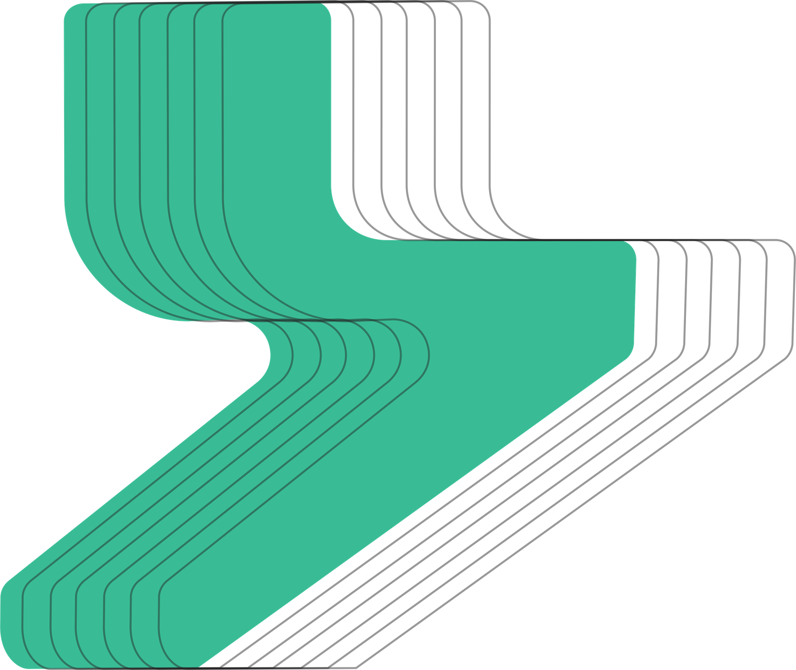
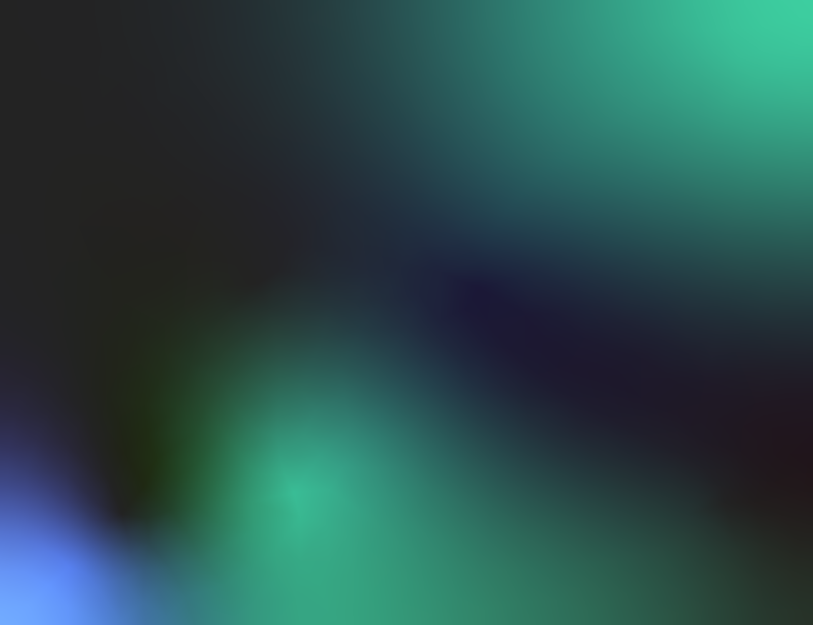
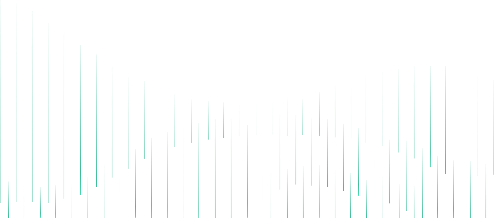
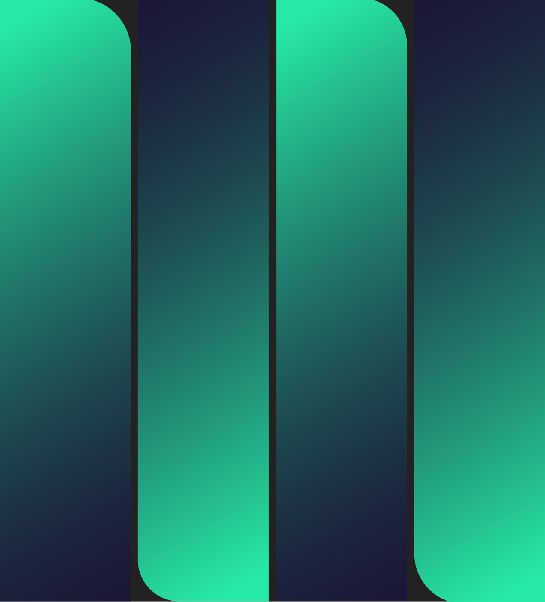
Iconografía
Sistema de íconos derivado del isologo: piezas sintéticas y geométricas que aportan claridad y ritmo. Complementan al contenido sin competir con él.
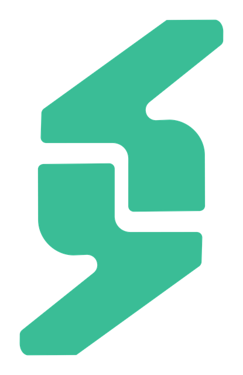
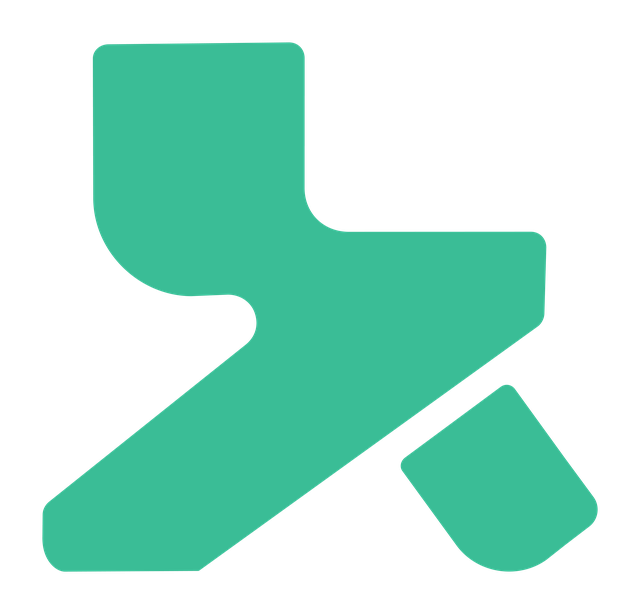
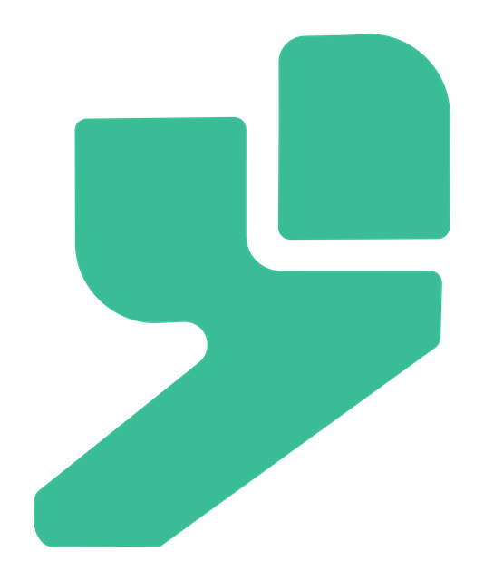
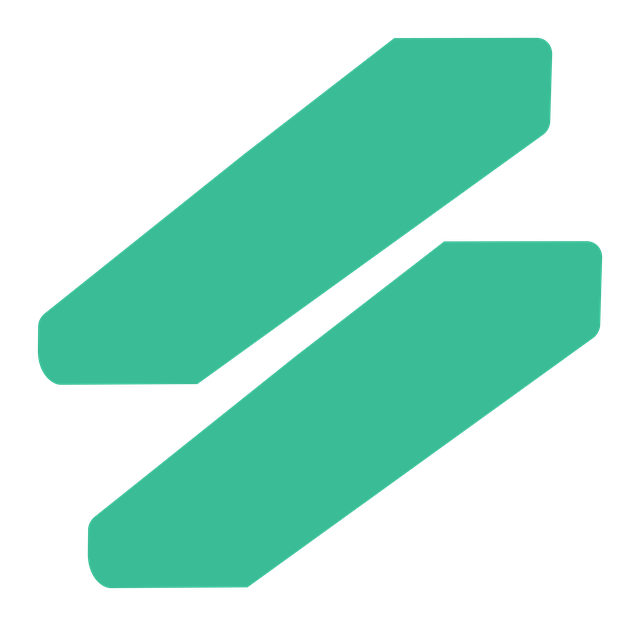
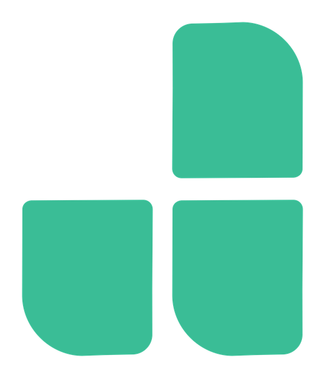
06
Usar con IA
Copiá este bloque y pegalo en Claude, ChatGPT, Gemini o Gamma para que generen contenido respetando la marca. También podés pasarles el link de los archivos estructurados.
JSON
brand.json
Specs estructurados (colores, tipografía, tono) en ES + EN para que cualquier IA o app los lea.
TXT
llms.txt
Resumen de marca en texto plano, pensado para modelos de lenguaje. Pasá el link y listo.
Tip
Canva / Slides
Cargá los HEX en el Brand Kit y descargá los logos en la sección de abajo. La fuente es Montserrat.
07
Descargas
Todos los recursos listos para usar. Los PNG tienen fondo transparente y alta resolución; pesan poco y entran en cualquier plataforma.
Kits completos
Logo principal
{kind=link}
{kind=link}
{kind=link}
{kind=link}
Logo horizontal (secundario)
{kind=link}
{kind=link}
{kind=link}
{kind=link}
Isologotipo
{kind=link}
{kind=link}
{kind=link}
{kind=link}
Isotipo
El isotipo se usa en Tech Green (marca) o en los neutros. Las variantes violeta, naranja, celeste y multicolor pertenecen a otras marcas del grupo — no usar en ABN Digital.
{kind=link}
{kind=link}
{kind=link}
{kind=link}
Elementos gráficos
{kind=link}
{kind=link}
{kind=link}
{kind=link}
Tipografías
Montserrat, separada según su uso en la marca. Los demás pesos (para casos especiales) están en el pack de variables.
Paleta de color
Los valores HEX y RGB de la marca en un archivo de texto, listos para pegar en Canva, Figma o el Brand Kit de cualquier herramienta.